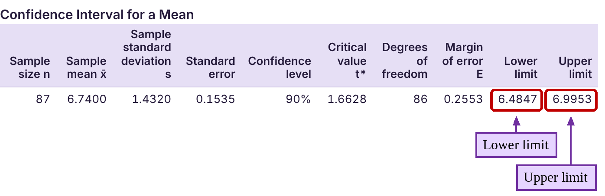
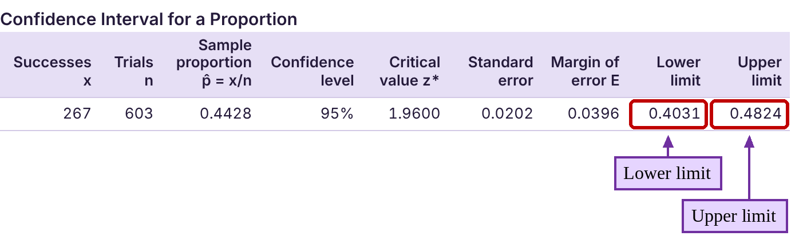
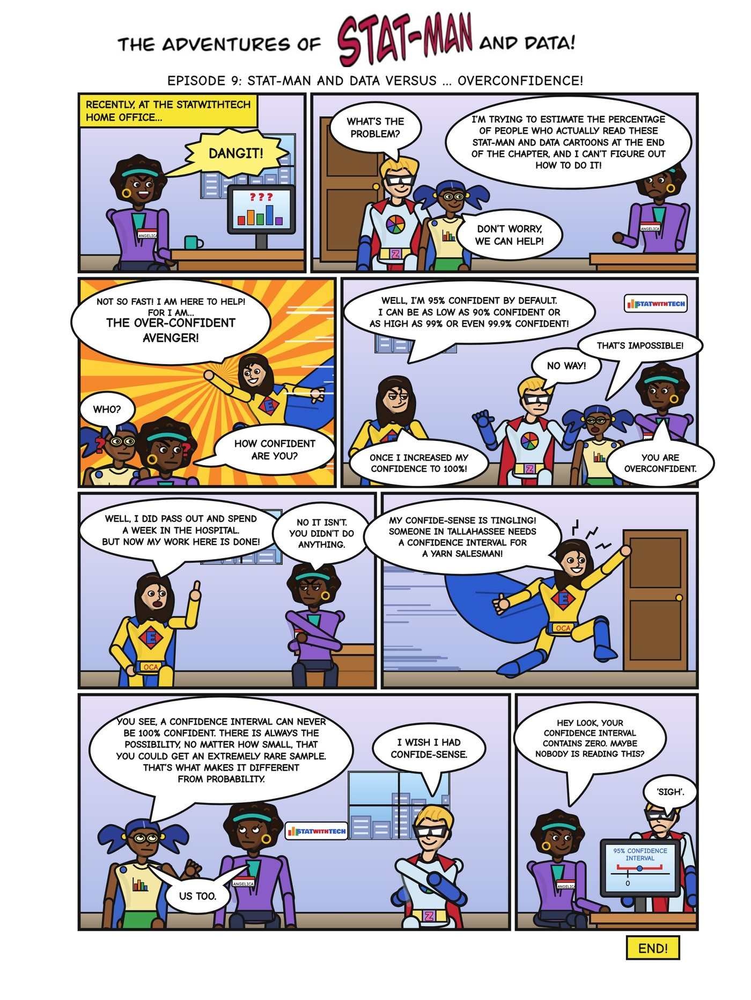

Section 9.4: Summary of Confidence Intervals
Learning Objectives
1.Identify the type of confidence interval to construct, or sample size formula to apply.
Which Confidence Interval Should We Use?
This chapter has been about estimating unknown population proportions or unknown population means. When we work with qualitative data, we use sample data to create a confidence interval to estimate the population proportion with a qualitative characteristic. When we work with quantitative data, we use sample data to estimate a population mean with a confidence interval centered at the sample mean.
So, when you are asked to find a confidence interval, you must first identify the parameter of interest. Is the question about proportions (or percent) or is it about a mean? If we are discussing qualitative variables and sample proportions, we use a confidence interval for a population proportion. If we are discussing quantitative variables and sample means, we use a confidence interval for a population mean.
- Sample size n
- Confidence level
Lower limit:
Upper limit:
STATBELT: Tests → Inference for Proportions → Estimate a proportion
- Sample size n
- Sample mean
- Sample standard deviation s
- Confidence level
Lower limit:
Upper limit:
STATBELT: Tests → Inference for Means → Estimate a mean
Figure 9.21: Flowchart for confidence intervals for proportions and means.
Which Sample Size Formula Should We Use?
In this chapter we also used the margin of error formula backwards to calculate the minimum sample size needed to have a specific margin of error. Again, knowing which formula to use depends on whether we are asked about population proportions or population means.
- Confidence level
- Margin of Error E as a decimal
- An estimate for (use if no other estimate is known)
- Confidence level
- Margin of Error E
- Sample standard deviation s or an estimate
Figure 9.22: Finding the minimum sample size for confidence intervals with a specific margin of error.
Examples
Questions about confidence intervals can look very similar. Pay careful attention to the following questions.
1.Are you working with a population proportion or population mean?
2.Are you asked to find a confidence interval, or are you asked to find a sample size for a specific margin of error?
If you can answer these two questions, you will know how to approach the problem at hand. Table 2 from section 9.2 is presented once again for easy access to the values of .
Table 2: Common Confidence Intervals and Critical Values | |||
|---|---|---|---|
To be this confident | Area in each tail | ||
99% | 1% = 0.01 | 0.005 | 2.576 |
95% | 5% = 0.05 | 0.025 | 1.96 |
90% | 10% = 0.10 | 0.05 | 1.645 |
Example 1:
In a survey of teenagers conducted by Pew Research Center in 2022, teens were asked if they support the Black Lives Matter movement. The sample size was 1316, and 922 teens either somewhat or strongly supported Black Lives Matter. Find the 95% confidence interval for the true population proportion of teens that support the Black Lives Matter movement.
Photo by Nicole Baster (opens in a new tab) on Unsplash (opens in a new tab)
Solution:Reading this question, we note that we are dealing with a qualitative variable. A teenager’s support or lack of support of BLM is a quality, not a number. Reading further, we are asked to find a 95% confidence interval for the population proportion of teens that support BLM. So, we are finding a confidence interval for a proportion. We will follow the left branch of the CI flowchart in figure 9.21.
•The sample size is n = 1316.
•The number of successes is x = 922, so .
•The confidence level is 95%.
Using n = 1316 and ,
So, follows a normal distribution and we can create the confidence interval.
Using STATBELT, we select Tests → Inference for Proportions → One sample → Estimate a proportion, choose “Summarized data,” and input 922 successes and 1316 trials. (You can use the formula if you prefer!)
From STATBELT, we get the lower limit is 0.6759 and the upper limit is 0.7254, rounded to four decimal places.
Conclusion: We are 95% confident that the true population proportion of teenagers who either somewhat or strongly support BLM is between 67.6% and 72.5%.
Example 2:
A student survey in Spring 2022 asked about quality and amount of sleep. The students collected data from 87 individuals who reported having no trouble sleeping. The sample mean amount of sleep was 6.74 hours with sample standard deviation 1.432 hours. Find the 90% confidence interval for the mean amount of sleep among people who do not have trouble sleeping.
Photo by Kinga Cichewicz (opens in a new tab) on Unsplash (opens in a new tab)
Solution:Reading this question, we can see that the mean and standard deviation for the quantitative variable “amount of sleep” are given. The last sentence asks us to find a 90% CI for the mean amount of sleep. We will follow the right branch of the flowchart for finding a CI for mean in figure 9.21.
•We have the sample size is n = 87.
•The sample mean is .
•The sample standard deviation is s = 1.432.
•The confidence level is 90%.
Since , we know that follows a t-distribution with DF = 87 – 1 = 86.
Using STATBELT, select Tests → Inference for Means → One sample → Estimate a mean, choose “Summarized data,” then input
, s = 1.432, and n = 87. Type 90% for the confidence level. You can calculate the margin of error and the lower and upper limits if you prefer.

STATBELT gives us a lower limit of 6.485 hours and an upper limit of 6.995 hours.
Conclusion: We are 90% confident that the mean amount of sleep for people who do not experience trouble sleeping is between 6.485 and 6.995 hours. Rounding to one decimal place, we can say that people with no difficulty sleeping sleep between 6.5 and 7.0 hours, on average, with 90% confidence.
Example 3:
An advocacy group wants to estimate the percent of delinquent cases involving Black juveniles who are diverted out of the court system (meaning that they are handled informally without prosecution). They want to create a 99% confidence interval with a margin of error no more than 3%. What is the minimum sample size they need?
Solution:This problem discusses estimating the percent of Black juveniles who are diverted out of the court system. Estimating a percent is the same as estimating a proportion. Further, we are told they want to create a 99% confidence interval with a margin of error of no more than 3%. So, we are given the margin of error and we need to find the sample size. The last sentence asks us to find the sample size they need. That means we will use the sample size formula for proportions on the left side of the flowchart in figure 9.22.
•The confidence level is 99%, so we will use .
•The margin of error is E = 3% = 0.03 as a decimal.
•There is no estimate for , so we will use .5.
Plugging these values into the sample size formula gives
So, we have . Since the number must be a whole number, we bump the number up to the next largest whole number, 1844. We need at least 1844 included in the sample to keep the margin of error under 3% and maintain 99% confidence.
Example 4:
In a study of racial disparities in the juvenile justice system, researchers obtained a sample of 603 delinquent cases involving youth, of which 267 were handled informally (diverted) outside the court system. Find the 95% confidence interval for the true population proportion of delinquent cases involving juveniles that are resolved outside of the court system.
Solution:Classification of juvenile cases is a qualitative variable, and the last sentence asks us to find the 95% confidence interval for the proportion of cases that are diverted. So, we are finding a confidence interval for a proportion. We will follow the left branch of the CI flowchart in figure 9.21. We know we are not going to find a sample size because we are already given that the sample size is 603.
•The sample size is n = 603.
•The number of successes is x = 267, so .
•The confidence level is 95%.
Using n = 603 and ,
So, follows a normal distribution and we can create the confidence interval.
Using STATBELT, we select Tests → Inference for Proportions → One sample → Estimate a proportion, choose “Summarized data,” and input 267 successes and 603 trials.

From STATBELT, we get the lower limit is 0.4031 and the upper limit is 0.4824, rounded to four decimal places.
Conclusion: We are 95% confident that the true population proportion of juvenile delinquency cases that are handled outside of the courts is between 40.3% and 48.2%.
Example 5:
The American Association of Physician Assistants (AAPA) wants to estimate the average starting annual salary for physician assistants. They want to create a 95% confidence interval with a margin of error no more than $5000. Prior estimates show that the standard deviation is approximately $32,000. Find the minimum sample size they need for this margin of error.
Solution:We are told the organization wants to estimate the average starting salary of physician assistants. Salary is a quantitative variable, and the average is referring to the mean. So, we are dealing with means, not proportions. We are told they want to create a 95% confidence interval with a margin of error of no more than $5000. The last sentence asks us to find the sample size they need. That means we will use the sample size formula for means on the right side of the flowchart in figure 9.22.
Photo by Hush Naidoo Jade Photography (opens in a new tab) on Unsplash (opens in a new tab)
•The confidence level is 95%, so we will use .
•The margin of error is E = 5000.
•The standard deviation is given as s = 32,000.
Plugging these values into the sample size formula gives
So, we have . Since the number must be a whole number, we bump the number up to the next largest whole number, 158. So, the minimum sample size that will keep the margin of error under $5,000 with 95% confidence is n = 158.

Text version of the comic
The Adventures of Stat-Man and Data! Episode 9: Stat-Man and Data versus… Overconfidence!
Caption: Recently, at the StatWithTech home office…
Angelica sits at her desk. Her computer screen shows a bar graph with question marks above it.
Angelica: DANGIT!
Stat-Man and Data walk in through the door.
Stat-Man: What’s the problem?
Angelica: I’m trying to estimate the percentage of people who actually read these Stat-Man and Data cartoons at the end of the chapter, and I can’t figure out how to do it!
Data: Don’t worry, we can help!
A woman in a yellow costume with a big E on her chest and a blue cape bursts in.
Over-Confident Avenger: Not so fast! I am here to help! For I am… the Over-Confident Avenger!
Data and Angelica (puzzled): Who?
Angelica: How confident are you?
Over-Confident Avenger: Well, I’m 95% confident by default. I can be as low as 90% confident or as high as 99% or even 99.9% confident!
Over-Confident Avenger: Once I increased my confidence to 100%!
Stat-Man: No way!
Data: That’s impossible!
Angelica: You are overconfident.
Over-Confident Avenger (finger raised): Well, I did pass out and spend a week in the hospital. But now my work here is done!
Angelica (arms crossed): No it isn’t. You didn’t do anything.
The Over-Confident Avenger leaps toward the door, cape flying.
Over-Confident Avenger: My confide-sense is tingling! Someone in Tallahassee needs a confidence interval for a yarn salesman!
Data: You see, a confidence interval can never be 100% confident. There is always the possibility, no matter how small, that you could get an extremely rare sample. That’s what makes it different from probability.
Stat-Man (arms crossed): I wish I had confide-sense.
Angelica: Us too.
Angelica’s screen shows a 95% confidence interval on a number line. The interval contains 0.
Angelica: Hey look, your confidence interval contains zero. Maybe nobody is reading this?
Stat-Man (behind the screen): ‘Sigh’.
END